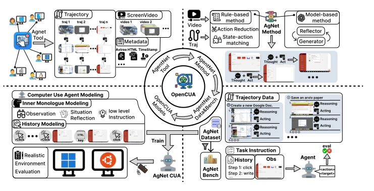
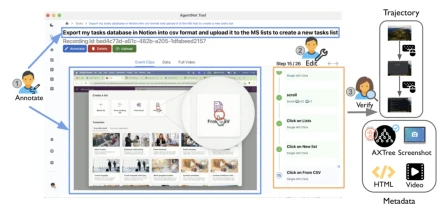
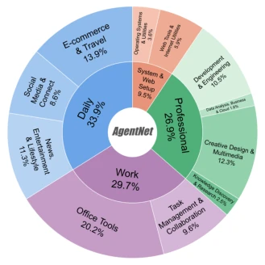
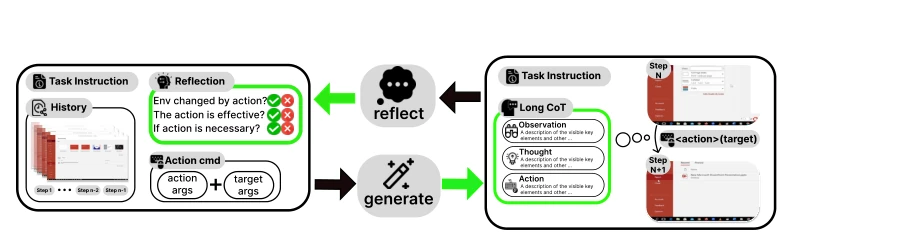
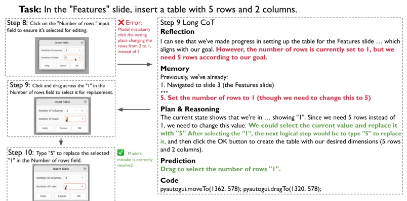
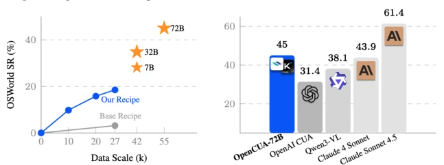

The name OpenCUA is quite ambitious, directly benchmarking against "Open Foundation". To be honest, the open-source community has long suffered from "black boxes"; closed-source models like Claude 4 have firmly capped the performance ceiling, leaving open-source models with not even a drop of soup. This paper acts as a ladder for the open-source community; although the AgentNet dataset is not massive, it excels in real desktop scenarios and cross-system coverage. OpenCUA-72B achieved a 45% success rate on OSWorld, truly elevating the open-source SOTA, and significantly narrowing the gap with the closed-source Claude 4 Sonnet. However, do not celebrate too early; the huge gap between Pass@16 and Pass@1 indicates that model stability is still like metaphysics, and it might collapse with slight environmental fine-tuning. The greatest contribution of this work is not the model itself, but open-sourcing the entire "alchemy" process of data collection, cleaning, and training, allowing future researchers not to reinvent the wheel. But the training cost of the 72B model is set in stone; ordinary laboratories can only sigh helplessly at the vast ocean.
研究动机Motivation
计算机使用代理（CUA）潜力巨大，但现状是“强者愈强，弱者愈黑”。最顶尖的系统如 Claude Computer Use [3] 完全闭源，训练数据、架构、开发流程都不公开。这导致研究社区无法真正理解其能力边界、局限性和风险。现有的开源尝试面临三大痛点：一是缺乏可扩展的基础设施来收集多样化的大规模计算机使用数据，实时捕捉用户交互和状态信息成本极高；二是现有 GUI 数据集规模小、范围窄，要么专注移动端 [25, 33]，要么专注 Web [13]，缺乏跨操作系统（Windows/macOS/Ubuntu）的复杂桌面任务；三是许多工作缺乏详细的建模策略和训练配方，即使有数据也难以复现。这种不透明性限制了通用 CUA 的技术进步，也阻碍了对可扩展性和泛化能力的有意义探索。因此，构建一个真正开源的 CUA 框架，涵盖数据、模型和评估，成为社区迫切需求。
Computer Use Agents (CUA) hold immense potential, but the current situation is "the strong get stronger, the weak get black-boxed". The most top-tier systems like Claude Computer Use [3] are completely closed-source; training data, architecture, and development processes are not public. This leads to the research community being unable to truly understand their capability boundaries, limitations, and risks. Existing open-source attempts face three major pain points: first, the lack of scalable infrastructure to collect diverse large-scale computer use data, where real-time capture of user interaction and state information is extremely costly; second, existing GUI datasets are small in scale and narrow in scope, either focusing on mobile [25, 33] or Web [13], lacking complex desktop tasks across operating systems (Windows/macOS/Ubuntu); third, many works lack detailed modeling strategies and training recipes, making reproduction difficult even with data. This opacity limits technical progress in general CUA and hinders meaningful exploration of scalability and generalization capabilities. Therefore, building a truly open-source CUA framework, covering data, models, and evaluation, has become an urgent need for the community.
The OpenCUA framework includes three core components: data collection tools, dataset construction, and training recipes. First, develop AgentNet Tool, allowing users to seamlessly record natural human operation demonstrations on personal computers, capturing screen video, mouse/keyboard signals, and Axtree information. Original demonstrations undergo Action Reduction and state-action matching, compressing high-frequency redundant signals into compact state-action pairs. Second, propose a Reflective Long Chain-of-Thought (CoT) synthesis method. Unlike direct supervised fine-tuning, this method iteratively generates structured reasoning through a Generator and Reflector. CoT is divided into three layers: L3 Contextual Observation, L2 Reflective Reasoning (including memory, error detection, and planning), L1 Executable Actions. During training, L1, L2, and L3 data are mixed; during inference, L2 format is adopted to enhance planning capabilities. Additionally, training data mixes grounding data (e.g., ShowUI), planning data, and general SFT data (e.g., Kimi Team data), ensuring the model understands both GUI operations and general reasoning capabilities. Finally, adopt a two-stage or joint training strategy, performing SFT based on Qwen2.5-VL and Kimi-VL, ultimately obtaining models like OpenCUA-72B.

Figure 2: Overview of the OPENCUA framework. Top left: AGENTNET TOOL captures user interac- tions across OSes with screen videos and action flows. Top right: Raw demos are processed into state-action trajectories with reasoning and history. Bottom right: AGENTNET Dataset and Bench provide diverse tasks and offline evaluation with gold-standard actions. Bottom left: OPENCUA models are trained and able to execute in realistic environments.

Figure 3: AGENTNET TOOL annotation and verifica- tion.

Figure 4: Domain distribution of tasks in AgentNet dataset

Figure 5: Reflective long CoT synthesis pipeline: generator and reflector iteratively generate and verify the reasoning components between the observation and ground-truth actions.

Figure 6: Reflective Long CoT Example: Before predicting the actual action, the model first reason according to the history and current action with reflection, memory, plan&reasoning and prediction in the CoT. The model identifies the former mistake and correct it in the later steps.
Experiments are conducted on OSWorld-Verified, WindowsAgentArena, and AgentNetBench. OpenCUA-72B achieves a 45.0% success rate on OSWorld-Verified, surpassing all open-source models and approaching Claude 4 Sonnet. It also achieves SOTA on GUI grounding tasks (UI-Vision, ScreenSpot-Pro). Ablation studies show that Reflective CoT is the key driver of performance improvement, with L2 inference format outperforming L1 and L3 during testing. Data scale analysis indicates that adding cross-domain data (e.g., Ubuntu data for Windows training) can significantly enhance generalization capabilities, and performance correlates positively with data volume and model size. Pass@n evaluation shows that OpenCUA-72B's success rate increases to 53.2% at Pass@3, indicating that increased compute at test time brings significant gains. However, it is also found that the model is sensitive to minor perturbations in the initial state; the large gap between Pass@1 and Pass@16 indicates that environmental dynamics and randomness still affect robustness.

Figure 1: OSWorld-Verified Performance [46]: Left: OpenCUA recipe helps performance scaling with data size and model size. Right: OpenCUA-72B outperforms current open-source models and is comparable with Claude 4 Sonnet [4].